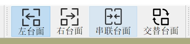

自定义后处理器
1. 作用
后处理器是一套 规则，用于处理输入的加工数据。经过预先定义的计算和格式化，生成机床可读取和执行的代码。
2. 存放路径
安装目录下的 UserPostProcessor 文件夹用于存放所有用户自定义的后处理器。
3. 调用步骤
- 将定义好的后处理器文件拷贝至 UserPostProcessor 文件夹。
- 打开安装路径下的
data.ini文件。 - 找到节 [StatusPreProcessing]。
- 找到键值对
PostProcessor=UserPostProcessor/AlphaPostProcessor.xml，将 AlphaPostProcessor 替换为实际需要使用的后处理器文件名称（注意保留文件后缀.xml）。
4. 通用性说明
仅当机床的 结构 和 控制器 发生变化时，才需要重新编写后处理器。
5. 文件结构
- root
version：后处理器版本号（保留，不做修改）Regulation：处理方式定义PrePostActions：多运动链协同加工的机型专用（保留，不做修改）Configulation：加工模式规划
6. 需要修改的部分
- Regulation
- Configulation
7. 详解：Regulation
- Rapid
开启高速高精功能 - Osai系统：
G500/G510 -
新代系统：
G160
具体参数请咨询数控系统供应商 -
Linear
关闭高速高精功能 - Osai系统：
G600/G610 -
新代系统：
G162
具体参数请咨询数控系统供应商 -
OutputDir
Iso代码的输出路径 -
Prepend
软件默认使用G1执行机械坐标，格式为：
G1 X Y Z C A F1000
部分数控系统（如维宏数控系统）要求在每个G1前添加额外指令，例如：
G53 G1 X Y Z C A F1000
示例设置：
Prepend = "G53"
这样生成的 Iso 代码将在每个G1前自动插入G53。 -
AccelerationScheme
定义加减速方案，取值范围[0,1]： 0：表示时间编程（仅适用于 Osai 系统），生成代码示例：
G1 X Y Z C A t0.0021：表示 F 编程（适用于所有数控系统），生成代码示例：
G1 X Y Z C A F1000
设定建议：- 仅使用 Osai 系统的设备建议选
0 -
若涉及多种数控系统，建议选
1 -
UserHeaderTail
特殊设定，一般无需修改 -
MultiChain
特殊设定，一般无需修改
- EntrySequence:设定进刀顺序
设置示例1： EntrySequence="1->2->4->5;3"
零位:G1 X-1500 Y0 Z0 C0 A0 F100000
起始位置:G1 X100 Y-1300 Z-500 C-50 A53.3 F100000
最终处理结果如下:
G1 X-1500 Y0 Z0 C0 A0 F100000
G1 X100 Y-1300 C-50 A53.3 F100000
G1 Z-500 F100000
设置示例2： EntrySequence=""
零位:G1 X-1500 Y0 Z0 C0 A0 F100000
起始位置:G1 X100 Y-1300 Z-500 C-50 A53.3 F100000
最终处理结果如下:
G1 X-1500 Y0 Z0 C0 A0 F100000
G1 X100 Y-1300 Z-500 C-50 A53.3 F100000
建议设定
EntrySequence="1->2->4->5;3"
- ExitSequence:设定退刀顺序
设置示例1: ExitSequence="3;1->2->4->5"
结束位置:G1 X100 Y-1300 Z-500 C-50 A53.3 F100000
零位:G1 X-1500 Y0 Z0 C0 A0 F100000
最终处理结果如下:
G1 X100 Y-1300 Z-500 C-50 A53.3 F100000
G1 Z0 F100000
G1 X-1500 Y0 C0 A0 F100000
设置示例2: ExitSequence=""
结束位置:G1 X100 Y-1300 Z-500 C-50 A53.3 F100000
零位:G1 X-1500 Y0 Z0 C0 A0 F100000
最终处理结果如下:
G1 X100 Y-1300 Z-500 C-50 A53.3 F100000
G1 X-1500 Y0 C0 A0 F100000
建议设定
ExitSequence="3;1->2->4->5"
8. 详解：Configulation
每个 Configulation 对应机床的一种加工模式。以常见的双Y台面为例，常有以下加工模式：
1. 左台面
2. 右台面
3. 串联台面（合并左右台面为一台使用）
4. 交替台面（左台面与右台面交替加工）
属性说明：
- Name：加工模式名称
- 左台面：L
- 右台面：R
- 串联台面：T
- 交替台面：M
-
NickName：显示名称，与图标共同构成软件图标显示
-
Image：显示图标，需存放于 UserPostProcessor 文件夹
 -
Prefix：输出 Iso 代码文件的前缀
-
Suffix：生成文件的后缀
示例：
假设保存名为alphaTest.alpha，可设置： - Prefix:
"L_" - Suffix:
".nc"
最终生成文件为：L_alphaTest.nc
节点说明：
- <Item>：表示一行用户指令
- <Coordinate>：配置与工件坐标系对应的坐标名称
示例：左台面加工模式定义
<Configulation Name="L" NickName="左台面" Prefix="" Suffix=".nc" Image="left.png">
<Item>(UDA)</Item>
<Item>h0</Item>
<Item>G79 Z0</Item>
<Item>G79 X0 Y0 V0 C0 A0</Item>
<Item>;Vacuum Off G54</Item>
<Item>;Vacuum Off G55</Item>
<Item>START</Item>
<Item>;Vacuum On G54</Item>
<Coordinate>G54</Coordinate>
<Item>;Vacuum Off G54</Item>
<Item>(GOTO,START)</Item>
</Configulation>
最终生成的 Iso 代码示例：
(UDA)
h0
G79 Z0
G79 X0 Y0 V0 C0 A0
;Vacuum Off G54
;Vacuum Off G55
START
;Vacuum On G54
;（此处为软件生成的加工动作）
...
...
;Vacuum Off G54
(GOTO,START)
备注：
如果已有旧版本的配置文件，您可以直接点击：提取运动模式 来提取生成加工模式。